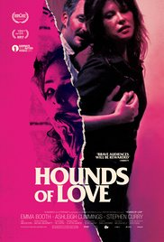

Click hereto go to HOMEPAGE
| The most popular movies in the world | |||||
|---|---|---|---|---|---|
| Title | Gendre | Release date | Description | Photo | |
| Hounds of love | Crime,Drama.Horror | 12 May 2017(USA) | Hounds of Love is the fifth studio album by English singer-songwriter and musician Kate Bush, released by EMI Records on 16 September 1985. It was a commercial success and marked a return to the public eye for Bush after the relatively poor sales of her previous album, 1982's The Dreaming. The album's lead single, "Running Up That Hill", became one of Bush's biggest hits. The album's first side produced three further successful singles, "Cloudbusting", "Hounds of Love", and "The Big Sky". The second side, subtitled "The Ninth Wave", forms a conceptual suite about a person drifting alone in the sea at night. Hounds of Love received critical acclaim on its release and in retrospective reviews. It is considered by many fans and music critics to be Bush's best album, and has been regularly voted one of the greatest albums of all time.[1] It was Bush's second album to top the UK Albums Chart and her best-selling studio album,[2] having been certified double platinum for 600,000 sales in the UK,[3] and by 1998 it had sold 1.1 million copies worldwide.[4] In the US, it reached the top 40 on the Billboard 200. The album was nominated at the 1986 BRIT Awards for Best Album, where Bush was also nominated for the awards for Best Producer, Best Female Artist, and for Best Single ("Running Up That Hill"). |  | |
| Baby Driver | Action,Crime,Music | 18 June 2017(USA) | Baby is a getaway driver in Atlanta, Georgia. When he was a child, a car accident killed his parents and left him with tinnitus, which he blocks out by listening to music on iPods. He ferries crews of robbers assembled by Doc, a heist mastermind, to pay off a debt he incurred after stealing one of Doc's cars. Between jobs, he creates remixes from snippets of conversations he records, and cares for his deaf foster father Joseph. At a diner, he meets a waitress, Debora, and they start dating. Baby's next robbery goes awry after an armed bystander chases them down, but Baby evades him and the police. Having paid his debt, Baby quits his life of crime and starts delivering pizzas. While Baby is on a date with Debora, Doc insists he join a heist at a post office, threatening to hurt Debora if he refuses. The crew consists of easy-going Buddy, his sharpshooter wife Darling, and trigger-happy Bats, who takes an immediate dislike to Baby. While the crew attempts to purchase illegal arms for the job, Bats realizes the dealers are police and opens fire, killing them all. Afterwards, Bats forces Baby to stop at Debora's diner, unaware of Baby and Debora's romance, and nearly kills her in a hold-up. Doc, furious at the botched deal, tries to cancel the heist, but Baby convinces him to go through with it. He attempts to flee later that night, hoping to take Debora and leave Atlanta. He is stopped by Buddy and Bats, who have discovered his recordings and believe he is an informant; when they and Doc hear his mixtapes, they are convinced of his innocence. During the heist, Bats kills a security guard. Disgusted, Baby refuses to drive the crew, causing Bats to hit him. Baby rams the car into rebar which impales and kills Bats. The three flee the police on foot. After police kill Darling, Buddy blames Baby for her death, and vows to kill him. Baby steals another car and flees to his apartment. After leaving Joseph at an assisted living home, Baby drives to Debora's diner to pick her up, where he discovers Buddy waiting. Baby shoots Buddy and flees with Debora as the police close in. Baby seeks help from Doc, who initially refuses to help as he blames Baby for ruining the heist. After seeing he truly loves Debora, Doc supplies them with cash and directions to get out of the country, stating that he was also in love once. Buddy ambushes them in the parking garage and hits and kills Doc with a stolen police car. A cat-and-mouse game ensues until Buddy has Baby at his mercy and shoots next to both his ears, deafening Baby. Debora disarms Buddy with a crowbar and Baby shoots him with the pistol, causing him to fall to his death. Fleeing Atlanta, Baby and Debora run into a police roadblock. Debora prepares to ram it, but Baby stops her and surrenders, telling her she does not belong in the world of crime. At Baby's trial, Joseph, Debora, and several people Baby saved during the robberies testify in his defense. Baby is sentenced to 25 years in prison with a parole hearing after five years. He receives postcards from Debora, who promises to wait for him. After five years, Baby is released and finds Debora waiting, and they kiss. | |
|
| Good Time | Crime-drama | August 11, 2017. | Good Time is a 2017 American crime-drama film directed by Ben and Josh Safdie and written by Josh Safdie and Ronald Bronstein. The film stars Robert Pattinson, Barkhad Abdi and Jennifer Jason Leigh. Its original soundtrack was composed by electronic musician Oneohtrix Point Never. The film has received critical praise and was selected to compete for the Palme d'Or in the main competition section at the 2017 Cannes Film Festival. It was released by A24 on August 11, 2017. Constantine “Connie” Nikas and his mentally challenged younger brother, Nick, attempt to rob a New York bank for $65,000. They appear to be successful before they realize that a dye pack has been slipped in with the cash in their getaway car, filling the car up with red dust, causing their driver to crash. Connie and Nick flee on foot. While attempting to walk home they are stopped by two police officers. In spite of Connie’s request to stay calm, Nick panics and runs, leading the cops to pursue them. Nick is taken into custody while Connie evades arrest. A terrified and confused Nick is placed in a Rikers Island holding cell, while Connie attempts to secure a bail bond using the stolen cash. He is told he needs $10,000 more to get Nick out of jail. Connie tries to convince his girlfriend, Corey, to pay off the balance with her elderly mother's credit cards, but her mother cancels the cards before they are able to use them at the bail bond center. Later, Nick is out of jail (Connie having taken the fall for the robbery) and back in therapy. The therapists have him join a group of other mentally handicapped patients in a team-building exercise. A withdrawn Nick slowly begins to engage with the group as the credits roll. | ||
| City of ghosts | War,thriller | 21 July 2017 (UK) | There are many that feel that this generation's access to data has in some way watered down the power of media. In a world where everything is RIGHT NOW, traditional media like print is dying on the vine. While this may be true of things like newspapers and magazines, the media is finally becoming more savvy and not only embracing a digital age that they found to be beneath them and more "bush league," they are also finding that this new age gives more opportunity to get to stories that they could not because of things like notoriety and old school methods. In "Cartel Land" director Matthew Heineman's new film "City of Ghosts," this subject is given a very up close and personal examination in a setting that is jarring, frightening, and heartbreaking. In the city of Raqqa in Iraq just a few years ago, the Assad regime fell to its rebellion, and the people who lived there felt like a new age was upon them. Unfortunately, that new age came in the form of ISIS, whose strong arm tactics and extremist beliefs caused oppression, violence, and murder within its city walls. A group of oppositionists both in and out of the city began a group called Raqqa is Being Slaughtered Silently (RBSS), and used the power of social media and the Internet to take the story of their city public. This would resort in their plight being broadcast worldwide through large media outlets, but the cost would be steep for them by way of exile, assassinations, and being constantly on the run from an organization that wants each and every one of them dead, even to the point of facing ridicule from the countries that they run to as it pertains not to just them but any kind of immigration from other countries, showing the effects of some of the same issues that we currently face in ours. | ||
| Dunkirk | Action,Drama,History | 21 July 2017(USA) | Dunkirk is a 2017 war film written, directed, and co-produced by Christopher Nolan that depicts World War II's Dunkirk evacuation. Its ensemble cast includes Fionn Whitehead, Tom Glynn-Carney, Jack Lowden, Harry Styles, Aneurin Barnard, James D'Arcy, Barry Keoghan, Kenneth Branagh, Cillian Murphy, Mark Rylance, and Tom Hardy. The film is a British, American, French, and Dutch co-production, distributed by Warner Bros. Pictures. Dunkirk portrays the evacuation from three perspectives: land, sea, and air. It has little dialogue, since Nolan sought to create suspense from cinematography and music. Filming began in May 2016 in Dunkirk and ended that September in Los Angeles, when post-production began. Cinematographer Hoyte van Hoytema shot the film on IMAX 65 mm and 65 mm large format film stock. Dunkirk has extensive practical effects, using thousands of extras, boats that participated in the evacuation, and period aeroplanes. The film premiered on 13 July 2017 at Odeon Leicester Square in London, and was released in the United Kingdom and the United States on 21 July in IMAX, 70 mm, and 35 mm film formats. It is the highest-grossing World War II film of all time, taking $525 million worldwide. Dunkirk received praise for its screenplay, direction, and cinematography; some critics called it Nolan's best work and one of the greatest ever war films. | ||